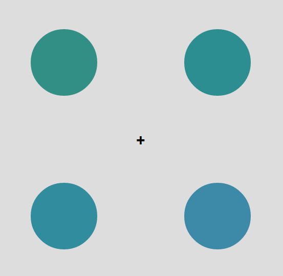
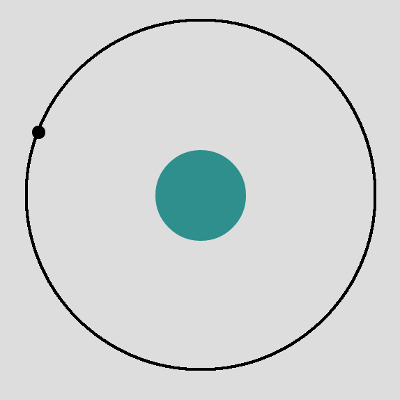
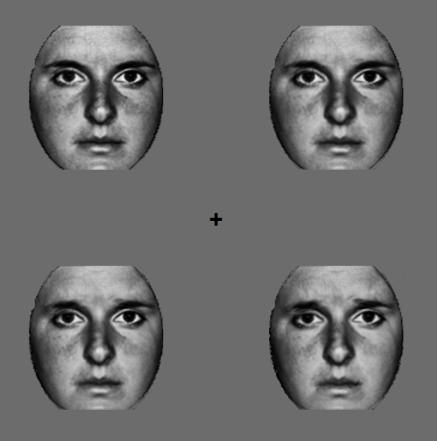
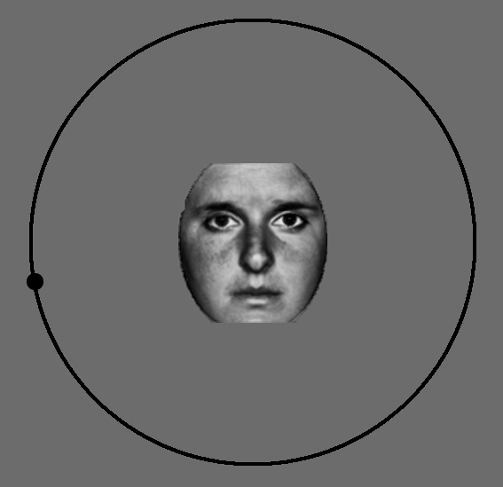

In this HIT, you will have to perform 2 separate tasks. It should take about 15-20 minutes total. Both tasks will require you to report the perceptual average of a set of items.
In one part, you'll see several circles, like this:

Notice how the color of the circles are all slightly different. These circles will be shown briefly, and then disappear, and you'll then be asked to report what the average color of these circles was. To do so, you'll use your mouse to change the color of a new circle (moving the mouse around the circle will change the color using a color wheel). In this case, you should report that the average color was something like this:

Once you've decided what the average is, you'll click your mouse to lock your answer in and move onto the next trial. It is important that you report the average of all of the circles, and that you not just pick one or two circles.
In the second part, you will perform a similiar perceptual averaging task, but instead of circles you will see emotional faces, like this:

And will then have to report, with the mouse, what the average of these emotions looked like. The faces will be different emotions (sad, happy, etc) and so on one particular trial, 3 faces might be somewhat happy and one might be more sad, making the average of the faces 'mostly happy'. To report the average emotion of the faces, you'll use a circle with different emotions on it and many subtle variations between those emotions present. As you move your mouse, the emotion of the faces will change between more happy, more neutal and more sad:

You'll have to select the average emotion that you saw in the first display, and then click when you think you've come as close as possible.
To start off with, we'll give you 3 practice trials of each type. During the practice trials, you'll get feedback on how far off you are. An error value close to 0 is better; further from 0 means you are far off.
Consent to Participate in Research:
By answering the following questions, you are participating in a study being performed by cognitive scientists in the Harvard University Psychology Department. The purpose of this research is to examine human visual performance.
By participating you are confirming that you are over 18 years of age and have normal or corrected-to-normal vision.
If you have questions about this research, or if you would like to receive a report of this research when it is completed please contact Timothy Brady at tbrady@wjh.harvard.edu.
Your participation in this research is completely voluntary. If you choose to participate, you may change your mind and leave the study at any time. Refusal to participate or stopping your participation will involve no penalty or loss of benefits to which you are otherwise entitled.
You may decline to answer any or all of the following questions. Your anonymity is assured; the researchers who have requested your participation will not receive any personal information about you.
For questions, concerns, or complaints that are not being addressed by the researcher, or research-related harm contact: Committee on the Use of Human Subjects in Research at Harvard University, 1414 Massachusetts Avenue, Second Floor, Cambridge, MA 02138. Phone: 617-496-CUHS (2847). Email: cuhs@fas.harvard.edu
By continuing, you are confirming that you understand these instructions and conditions of participation.